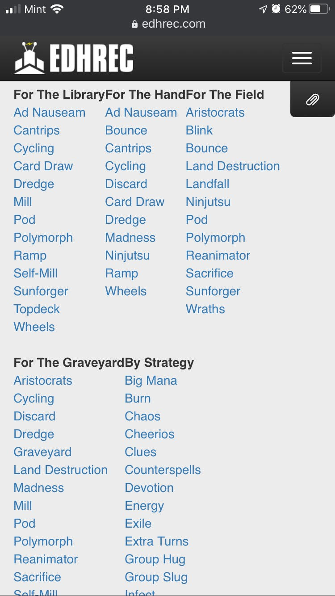

Harvard Art Museums
White Space and Clean Design
 harvardartmuseums.org
harvardartmuseums.org
"The clean design acts as the perfect backdrop for the art, which stands out in sharp contrast against the white space. The titles and descriptions of the various pieces don’t have any sort of border, which prevents them from competing with the art for attention."
Amazon
Visual Hierarchy
amazon.com amazon.com"The bar at the top automatically switches rapidly between various promotions. The grabs attention immediately. The Amazon blog post takes up the most space, so the eyes are then drawn to that, before looking down to their response post. The advertisement for the truck is smallest, so it’s the last thing noticed. "
EDHREC
Hick's Law
 edhrec.com/"Hick's Law is about not overwhelming the user by breaking down complex elements into more simple steps. EDHREC catalogs various lists and seperates them by theme and other catetories. This helps the user to more easily find what they want."